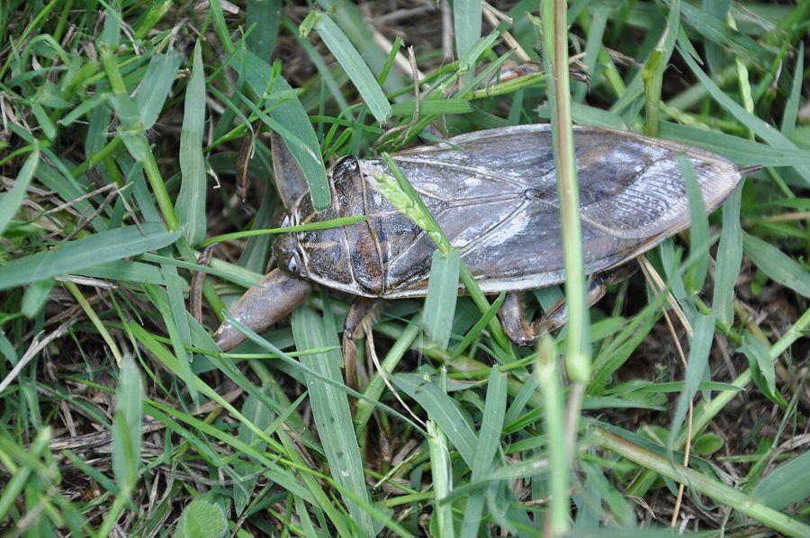

लेसर जायंट वॉटर बगLesser Giant Water Bug
Lethocerus patruelis · Belostomatidae · INS-0266

- Scientific name वैज्ञानिक नाम
- Lethocerus patruelis (Stål, 1854)
- Family कुल
- Belostomatidae
- Hindi हिंदी
- लेसर जायंट वॉटर बग
- Local names स्थानीय नाम
- lesser giant water bug
- Status here यहाँ की स्थिति
- native
- Movement आवागमन
- Resident, here all year
- Known from कहाँ दर्ज
- Others have published records from the Basti–Ayodhya districts बस्ती–अयोध्या के ज़िलों से दूसरों के प्रकाशित अभिलेख
- IUCN IUCN
- not evaluated
- Review समीक्षा
- not yet reviewed
When to look कब देखें
Present all year. साल भर मौजूद।
Tell it apart from इनसे अलग पहचानें
लेसर जायंट वॉटर बग / Lesser Giant Water Bug
Lethocerus patruelis (Stål, 1854) — Belostomatidae
लेसर जायंट वॉटर बग — तालाबों, झीलों और धान के खेतों के शांत पानी में रहने वाला एक विशाल, चपटा और खूंखार शिकारी जल-कीड़ा है। इसकी अगली टांगें शिकार को दबोचने के लिए मुड़ी हुई और मजबूत होती हैं और इसके मुंह पर एक नुकीली सूंड (चोंच) होती है जिससे यह शिकार में जहरीला पाचक रस छोड़ता है। इसे हाथ से पकड़ने पर यह बहुत दर्दनाक डंक मार सकता है। रात के समय यह रोशनी की तरफ आकर्षित होकर दूर-दूर तक उड़ता है।
Quick Identification त्वरित पहचान
| Feature | Description |
|---|---|
| Body size & shape | Very large, dorsoventrally flattened, elongate-oval brown true bug with cryptic bark-like coloration |
| Forelegs | Powerful raptorial forelegs with enlarged femora and curved tibiae specialized for grasping prey |
| Mouthparts | Short, stout, highly sclerotized piercing rostrum (beak) capable of delivering a severe bite |
| Breathing apparatus | Pair of short, retractile caudal respiratory siphons at abdominal apex used at water surface |
| Hind legs | Flattened, swimming-adapted middle and hind legs fringed with dense marginal setae |
Huge, flattened, brown aquatic bug easily recognised by its powerful raptorial forelegs, short sharp predatory beak, and cryptic leathery hemelytra. When cornered or handled carelessly, it delivers an intensely painful bite with its piercing beak.
Field tip: Look beneath bright street lamps or shop lights near wetlands during warm monsoon nights, where clumsy flying adults often crash.
हिंदी: बड़े आकार का भूरा चपटा जल-कीड़ा जिसकी अगली टांगें केकड़े की तरह शिकार पकड़ने वाली होती हैं। इसके मुंह पर मजबूत सूई जैसी चोंच होती है जिससे यह असावधानी से छूने पर तेज डंक मारता है।
Morphology आकारिकी
Biometrics from open entomological literature:
| Feature | Characteristic | Source |
|---|---|---|
| Body form | Elongate-elliptic, strongly flattened dorsoventrally, cryptically mottled brown | Literature |
| Raptorial legs | Forelegs heavily muscled, with grooved femora receiving sickle-shaped tibiae | Literature |
| Head structure | Broad triangular head with large, prominent, multifaceted compound eyes | Literature |
| Breathing strap | Paired retractile respiratory siphons extending from abdominal terminus | Literature |
| Typical dimension | Measurement not available in consulted open sources. | Open sources |
The body is elongate-oval, flat, and leathery, coloured dull brownish-ochraceous with subtle darker mottling that provides camouflage against submerged decaying vegetation and mud. The compound eyes are large, reniform, and closely appressed to the anterior margin of the pronotum. The piercing-sucking rostrum is short, three-segmented, and extremely rigid. The middle and hind legs are flattened into broad swimming paddles fringed with natatorial hairs. A pair of flat, strap-like respiratory appendages at the abdominal apex are extended to breach the water surface film.
हिंदी: इसका शरीर चपटा और चमड़े जैसा सख्त होता है जिसका रंग सड़े हुए पत्तों जैसा भूरा होता है। इसकी आंखें बड़ी और उभरी होती हैं। पूंछ के अंत में सांस लेने के लिए दो छोटी नलियां होती हैं जो पानी की सतह को छूती हैं।
Behaviour & Ecology व्यवहार और पारिस्थितिकी
A sedentary ambush predator that hangs upside down among submerged vegetation, reed roots, or trailing stems of Curled Pondweed (Potamogeton crispus). It remains motionless for hours, perfectly camouflaged, until an unsuspecting fish, tadpole, or aquatic invertebrate swims within reach. With lightning speed, the raptorial front legs snap shut around the prey, and the sharp rostrum pierces the prey's cuticle, injecting toxic digestive enzymes that rapidly paralyze the nervous system and liquify internal tissues. Adults are strong fliers and embark on nocturnal dispersal flights during humid weather.
हिंदी: यह पानी में जलीय पौधों के बीच उल्टा लटका रहकर घंटों शिकार का इंतजार करता है। जैसे ही कोई मछली या मेंढक पास आता है, यह उसे अपनी अगली टांगों से झपटकर पकड़ लेता है और अपनी सूंड से जहर डालकर उसे गला देता है। बरसात में यह रात को तेजी से उड़ता है।
Life Cycle / Phenology जीवन चक्र
Breeding takes place during the warm monsoon season. Following courtship, females lay large batches of spherical eggs on emergent reeds, tree branches, or wooden stakes standing just above the water level. The male frequently guards and hydrates the egg clutch by climbing out of the water to moisten them with water from his body. Upon hatching, the nymphs drop directly into the water, resembling miniature adults. They undergo five nymphal instars, actively hunting increasingly larger prey until completing their final moult to winged maturity.
हिंदी: बरसात के दिनों में मादा पानी से बाहर निकली हुई सरकंडे की डंडियों पर अंडों का ढेर लगाती है। नर अक्सर अंडों की पहरेदारी करता है और उन्हें सूखने से बचाता है। अंडों से निकले बच्चे पानी में गिरकर तुरंत शिकार करने लगते हैं।
Host Plants or Prey आहार
Apex invertebrate predator with a broad carnivorous diet. It captures and consumes tadpoles, small frogs, and small fish, along with freshwater crabs, water snails, and aquatic beetle larvae. In flooded rice paddies, it feeds on large aquatic bugs and grasshopper nymphs that fall into the water.
हिंदी: यह पानी का सबसे बड़ा शिकारी कीड़ा है जो मेंढक के टेडपोल, छोटी मछलियों, केकड़ों और पानी में गिरने वाले बड़े पतंगों को पकड़कर उनका रस चूसता है।
Predators / Natural Enemies शत्रु
Despite its large size and formidable venomous bite, the bug is preyed upon by apex wetland vertebrates. Large water snakes, monitor lizards, predatory fishes like the giant catfish, and wading birds such as painted storks and purple herons successfully capture and swallow adult bugs. Shoreline spiders and ants attack vulnerable newly emerged nymphs and unguarded egg clutches.
हिंदी: इसके तेज डंक के बावजूद बड़े बगुले, पानी के सांप, गोह और बड़ी मछलियां इसे निगल जाती हैं। पानी के बाहर दिए गए इसके अंडों पर चींटियां और मकड़ियां हमला करती हैं।
Agricultural / Human Relevance कृषि प्रासंगिकता
Highly beneficial in agricultural wetlands where it regulates populations of aquatic crop pests, snail hosts of veterinary parasites, and mosquito larvae. However, it requires careful handling: fishermen clearing nets or transplanting paddy seedlings can receive an excruciatingly painful puncture wound from its beak if it is touched accidentally. The injected digestive enzymes cause intense burning pain and localized swelling that can persist for several hours, earning it the common name toe-biter.
हिंदी: यह खेतों में हानिकारक कीड़ों और मच्छरों के लार्वा को खाकर फायदा पहुंचाता है। लेकिन जाल निकालते समय या धान लगाते समय यदि यह पैर या हाथ में काट ले, तो इसका डंक बहुत तेज दर्द और सूजन पैदा करता है। इसे कभी भी नंगे हाथ से न पकड़ें।
Expected Locally स्थानीय रूप से अपेक्षित
Not a field record. Written from published accounts for eastern Uttar Pradesh. No confirmed local sighting yet — if you have seen it, that is what the atlas needs.
अभी तक स्थानीय पुष्टि नहीं। यह विवरण प्रकाशित स्रोतों से है, किसी अवलोकन से नहीं।
Occurs in weed-rich perennial ponds, oxbow lakes, and flooded agricultural wetlands across the northern plains. Observers in Basti and Ayodhya should inspect outdoor light traps near marshlands or examine aquatic vegetation pulled up from rural irrigation tanks.
GBIF holds published records from these districts.
A first local record for the atlas would be a clear photograph showing diagnostic features, accompanied by date, time, and precise location coordinates sent through the project's About page.
हिंदी: यह बस्ती और अयोध्या के जलमग्न तालों, पोखरों और धान के खेतों में पाया जाता है। बरसात की रातों में रोशनी के पास गिरे इस बड़े कीड़े की सावधानी से फोटो खींचकर एटलस को भेजें।
Distribution वितरण
Global range: Southern Europe, Middle East, Central Asia, and the South Asian subcontinent eastward into Myanmar.
In India: Recorded from northern, central, and eastern India across riverine floodplains and wetland basins.
In Uttar Pradesh: Distributed throughout Gangetic plain wetlands, canal networks, and inundated paddy tracts.
In Basti district / eastern UP: Documented from regional freshwater wetland surveys across eastern Uttar Pradesh districts.
हिंदी: यह दक्षिणी यूरोप, मध्य एशिया और भारत की नम भूमियों में पाया जाता है। उत्तर प्रदेश में गंगा और घाघरा के कछार वाले सभी जिलों में यह मौजूद है।
Research Questions शोध प्रश्न
- What is the impact of seasonal wetland drainage on the reproductive success and egg survival of Lethocerus patruelis?
- How effective is the male paternal egg-brooding and hydrating behaviour under high summer temperatures in eastern UP? / क्या नर कीड़ा गर्मी में अंडों को पानी से गीला रखकर सूखने से बचाता है?
- What is the composition and enzymatic activity of the salivary toxins used by this giant water bug?
- A schoolchild can observe attracted insects under a village street light at night to see if any huge flat brown bugs have arrived / क्या कोई बच्चा रात को बल्ब के नीचे गिरे इस विशाल भूरे कीड़े को दूर से पहचान सकता है?
- How does the presence of giant water bugs influence mosquito larval survival in rural village retention ponds?
हिंदी: क्या इस कीड़े का लार में मौजूद पाचक रस मेंढक और मछली को तुरंत सुन्न कर देता है? क्या यह कीड़ा तालाबों में मच्छरों को पनपने से रोकता है?
Similar Species मिलती-जुलती प्रजातियाँ
| Species | How to tell apart | हिंदी | |
|---|---|---|---|
| Giant Water Bug \ | Lethocerus indicus | Distinctly larger species with pale yellow longitudinal stripes on head and pronotum | यह काफी बड़ा होता है और इसके सिर व छाती पर पीली धारियां होती हैं |
| Diplonychus rusticus (Lesser Water Bug) | Much smaller with ovate body; males carry eggs cemented on their backs | बहुत छोटा होता है और नर अपनी पीठ पर अंडों को चिपकाए रखता है |
Field rule: Huge, cryptically brown, flattened aquatic true bug with powerful raptorial front legs, stout beak, and retractile breathing siphons.
हिंदी: बहुत बड़ा, भूरा, चपटा जल-कीड़ा जिसकी अगली टांगें शिकार पकड़ने के लिए मुड़ी हों और मुंह पर तेज चोंच हो।
Taxonomy & Classification वर्गीकरण
Original description. Stål (1854), Öfversigt af Kongliga Vetenskaps-Akademiens Förhandlingar, vol. 11, p. 241; described under the basionym Belostoma patruelis.
Subspecies. Monotypic species. Distant (1906) treats related giant water bugs under Belostoma.
Family and order placement. Belongs to the family Belostomatidae (giant water bugs), superfamily Nepoidea, infraorder Nepomorpha, suborder Heteroptera, order Hemiptera.
Phylogenetic notes. Member of the subfamily Lethocerinae, recognized by their large body size, non-specialized male egg carrying on the hemelytra, and distinct leg morphology.
IUCN status rationale. Not currently evaluated on the IUCN Red List of Threatened Species.
हिंदी: इसका वैज्ञानिक विवरण स्टॉल ने 1854 में दिया था। यह बेलोस्टोमाटिड्डी कुल का सदस्य है और प्रकृति संरक्षण संघ की रेड लिस्ट में अभी इसका मूल्यांकन नहीं हुआ है।
Photo Gallery फोटो गैलरी
No photos yet — add field photos to media/species/lesser_giant_water_bug/ and run node scripts/sync_photos.js.
Photos needed आवश्यक फोटो
- [ ] Dorsal habitus showing flattened cryptic brown body and hemelytral venation (पीठ का पूरा दृश्य जिसमें भूरा रंग और पंख दिखें)
- [ ] Frontal close-up showing raptorial forelegs and sharp piercing rostrum (सामने का दृश्य जिसमें शिकारी टांगें और चोंच दिखे)
- [ ] Adult resting underwater among emergent aquatic stems with breathing siphons at surface (पानी के अंदर तने पर बैठा वयस्क)
References संदर्भ
- Original description: Stål, C. (1854). Nya Hemiptera. Öfversigt af Kongliga Vetenskaps-Akademiens Förhandlingar, 11(8), 231–255. (as Belostoma patruelis).
- Distant, W. L. (1906). The Fauna of British India, Including Ceylon and Burma: Rhynchota. Vol. 3. Taylor & Francis, London. (as Belostoma).
- Perez Goodwyn, P. J. (2006). Taxonomic revision of the subfamily Lethocerinae Lauck & Menke (Heteroptera: Belostomatidae). Stuttgarter Beiträge zur Naturkunde, Serie A (Biologie), 695, 1–71.
- GBIF Occurrence Data — Lethocerus patruelis, India (2025).
Source file: species/fauna/insects/lesser_giant_water_bug.md